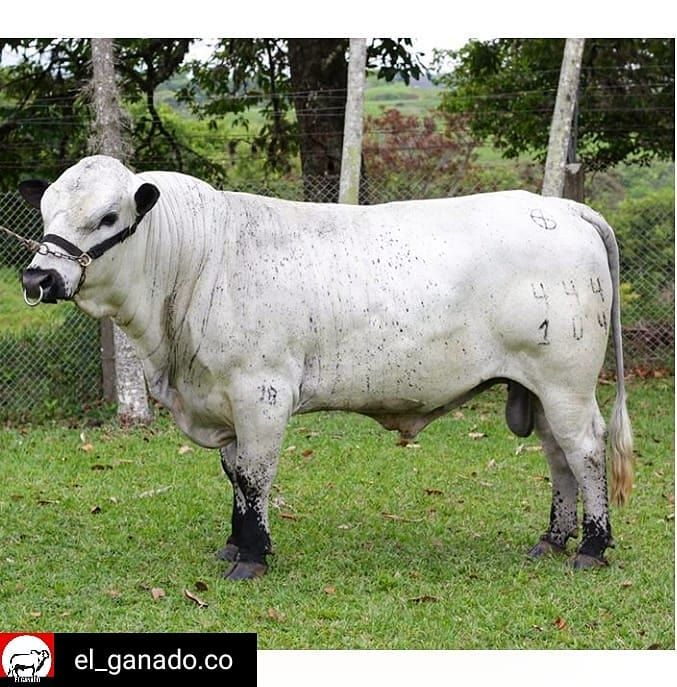
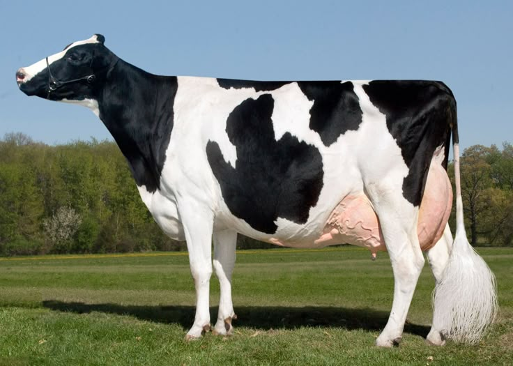
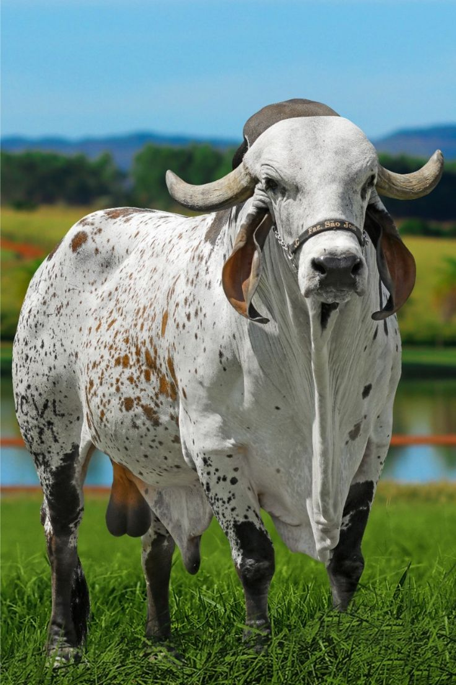
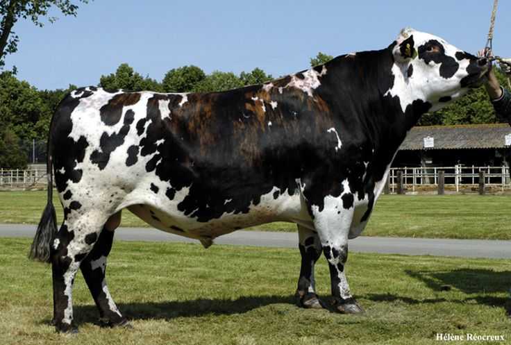

Blanco Orejinegro
Es una raza criolla colombiana reconocida por su adaptación a diferentes condiciones del territorio nacional.

Brahman
Es una raza utilizada principalmente para la producción de carne y se adapta bien a climas cálidos.

Holstein
Es una raza reconocida por su producción de leche y por su característico pelaje blanco con manchas negras.

Gyr
La raza Gyr (también llamada Gir) es una raza de ganado bovino originaria de la India. Se destaca principalmente por su producción de leche, su adaptación a los climas cálidos y su resistencia a condiciones tropicales. En Colombia y otros países de América Latina se utiliza especialmente en la ganadería lechera y en cruces para mejorar la adaptación del ganado al calor.

Normando
La raLa raza Normando es una raza bovina originaria de Normandía, una región de Francia. Es reconocida por su capacidad para producir leche de buena calidad y por su aptitud para producir carne. En Colombia tiene presencia importante en zonas de clima frío, especialmente en regiones ganaderas de montaña como Cundinamarca y Boyacá.